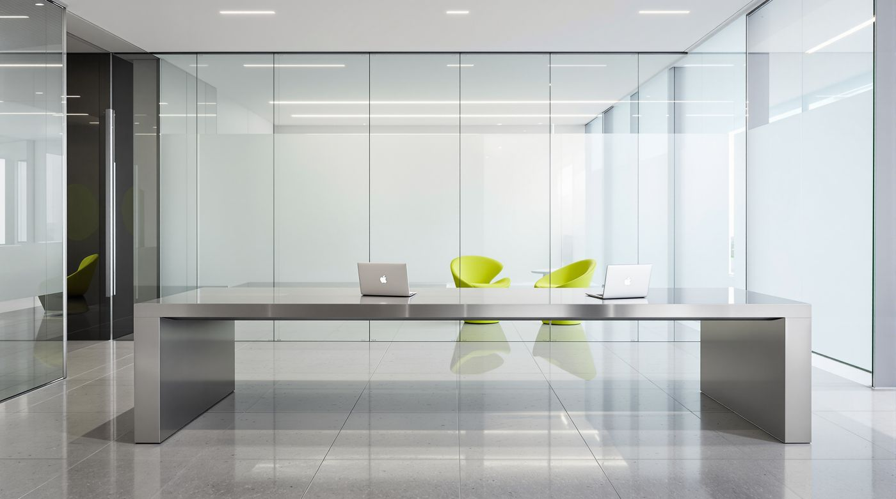
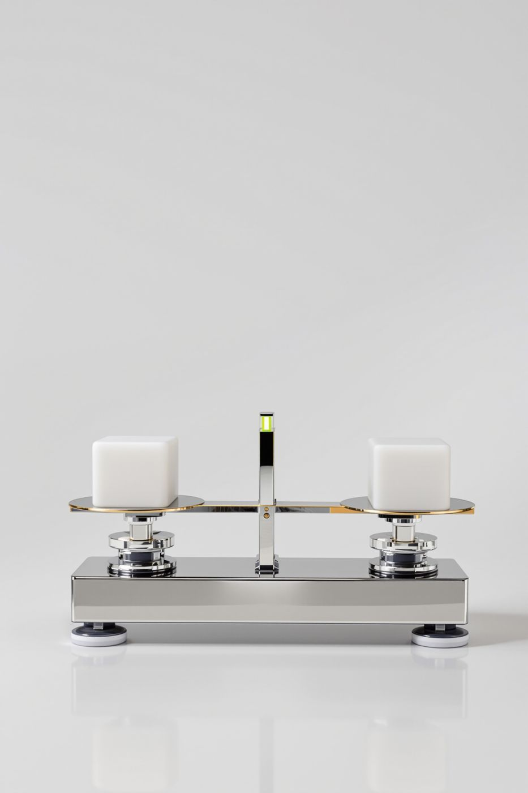
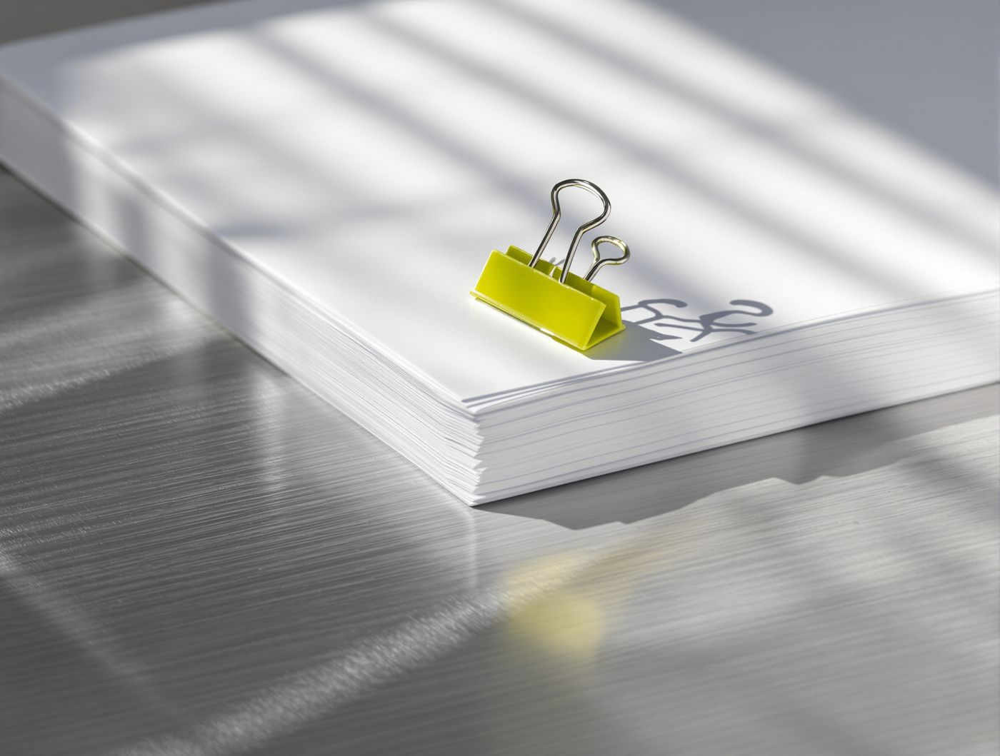
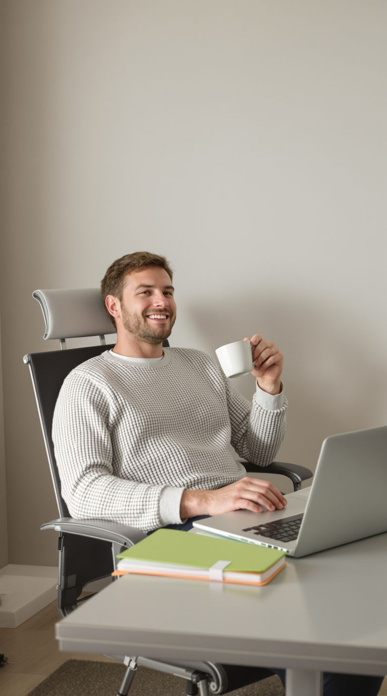

НЕТТО
Бухгалтерские услуги. Хай-тек минимализм. Всё сходится.
мудборд · кадры FLUX Pro Ultra





#F6F8F9
#AEB4B9
#17191C
#C8F31D
Бухгалтерские услуги. Хай-тек минимализм. Всё сходится.
мудборд · кадры FLUX Pro Ultra



Три кадра под рекламу. Текст ставится отдельным слоем поверх, на картинке его нет.
FLUX Pro Ultra

Сторис 9:16
Владелец бизнеса отдыхает, документы лежат в лаймовой папке. Заголовок встаёт на пустую стену сверху.
Пост 3:4
Папку передают из рук в руки: сразу понятно, что работу забирают на себя. Место под текст — размытое стекло сверху.
Баннер 16:9
Бухгалтер за столом смотрит в камеру. Левая половина свободна под заголовок и кнопку.
Холодная база из стекла и металла, графит для текста и один кислотный лайм там, где всё сошлось.
Бухгалтерия, которая сходится
Ведём учёт, сдаём отчётность и отвечаем на запросы налоговой. Вы видите итог, а не стопку бумаг.
Дт 51 = Кт 62
0 1 2 3 4 5 6 7 8 9